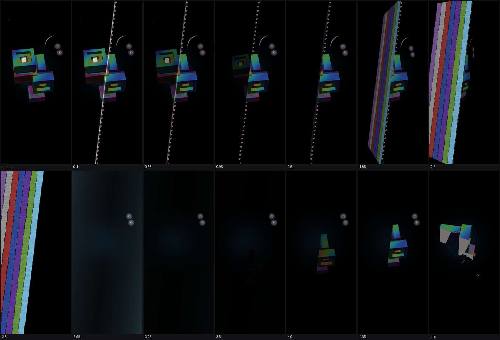

How it plays
The liquid is a vacuum
The first touch plants a seed. From it grows a cluster of stepped, hollow, square crystals under a film of oxide that turns colour with the light. The crystal breathes; every breath is a deep ring through the water.
Where waves pile up, pairs of quicksilver drops rise and, if nobody looks, sink back as though they had never been. Touching a drop is an observation: the pair becomes real. One drop spirals into the crystal and feeds it, the other escapes and is heard.
Everything drifts towards disorder. The way back is a word: three things done in order, then the same three again. The world sings a word back, folds the newest qubits into one white one, and grows quiet. It does not pay twice for the same word.
Seven surfaces, four languages
Cut the world and it turns over
One straight stroke from edge to edge cuts the world in two, crystal and all. The piece holding less of the crystal falls away; the other turns over on the cut until its edge faces you and shows the strata beneath. The next surface spreads out from the cut, and each one hears something else. A word is always the side of the crystal and whether it came on the breath.
Looks
Clear hears where you look: which side of the crystal, on the breath or not.
Strings
Draw a circle on still water and a pair born inside it falls in entangled, joined by a string of light. Pluck the strings on the breath.
Spirals
Send hoppers under the black surface; here they spiral back up within moments. The world hears where each one went down.
Glints
Between breaths, small lights tremble on the water. Catch one in a circle before it goes out.
A cycle ends when three different surfaces have sung back: the crystal falls into the lens it bent and leaves one drop. Touch it and the next cycle grows in other colours. Leave it alone and it melts into black peace. There is one more way, and it is yours to find.
The cut, frame by frame

Made of
Computed, not drawn. Every picture but the icon and every sound is made while the game runs. The package carries no image or sound files.
The press of a finger is all. Look, pluck, sink, circle, cut. No buttons, no menus, no numbers. Back opens an eye in the corner; touch it and the game plays itself while you watch.
Small. OpenGL ES 3.0, Java, built with a shell script. About three hundred kilobytes.
Needs Android 8.0 or newer and a GPU with OpenGL ES 3.0. Zero-Clause BSD licence.